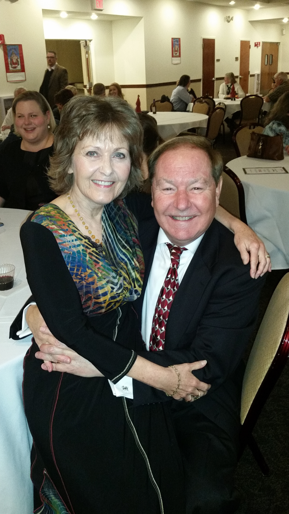

Lectures, trunk shows, and hands-on workshops.

My husband, David, is also an artist who works with oil as his medium. Together we enjoy giving Lectures, Trunk Shows, and Workshops.
Our lectures include a presentation of our journeys as artists along with inspiration, stories, and examples of our work. We also exhibit collaborations from our joint creative process.
Our workshop technique involves taking fabric, paint (or any medium) spread on a surface for artists to study and identify abstract shapes as compositional drivers. Participants create finished pieces during sessions with peer input and feedback.
Download Brochure